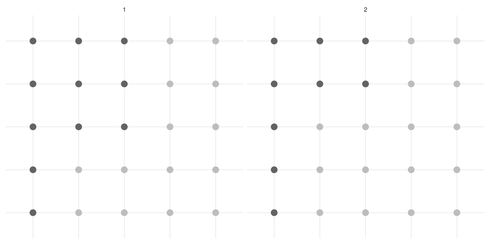
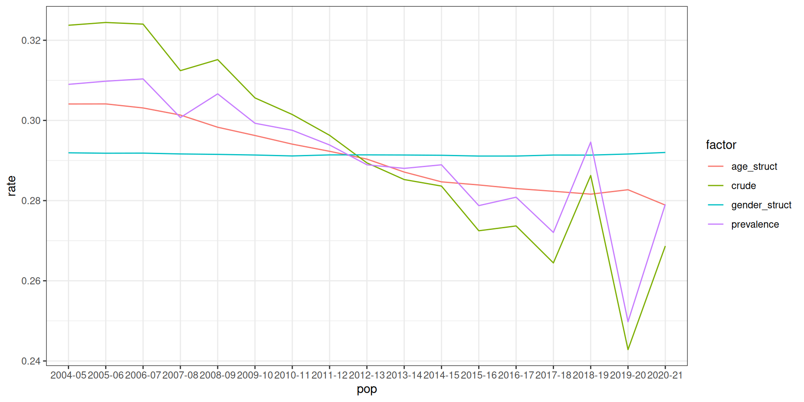
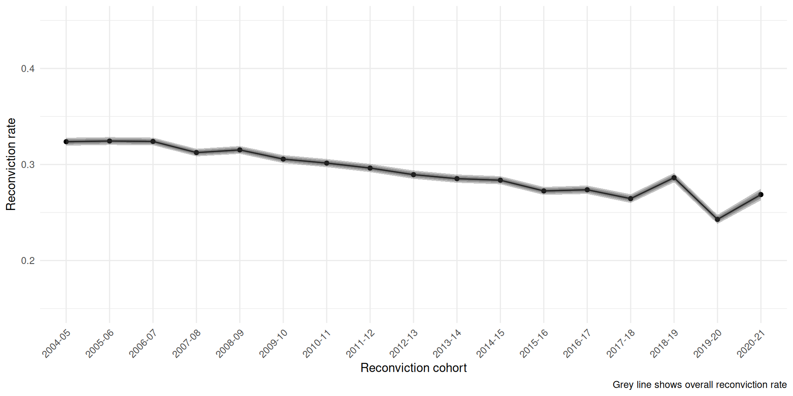
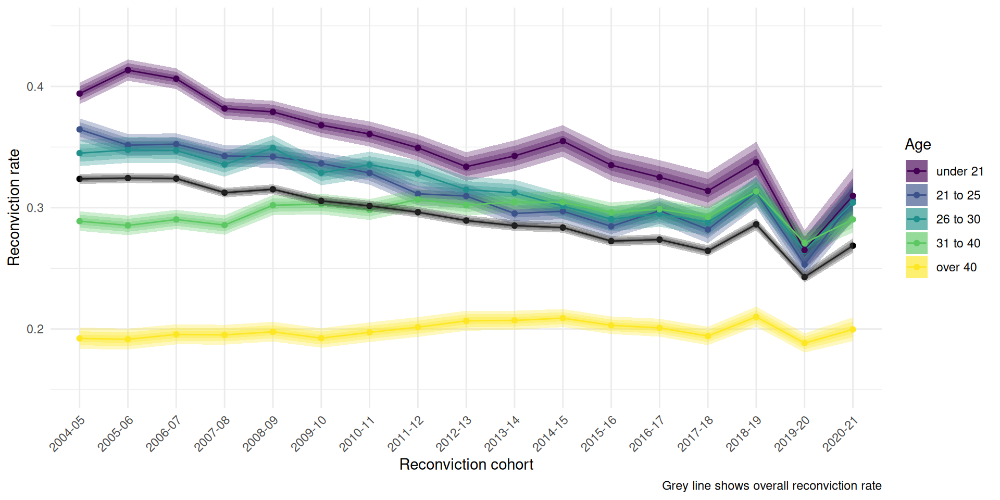
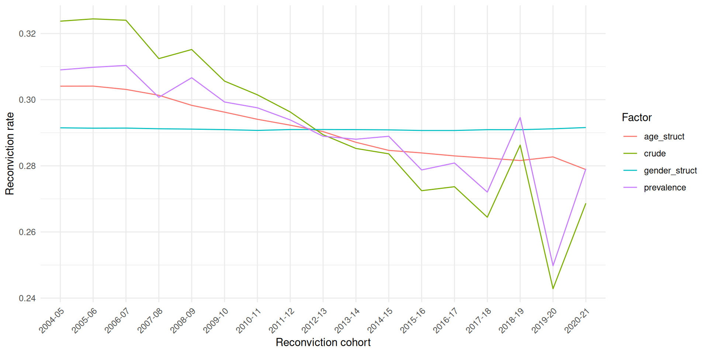

| 2004-05 | 2020-21 | diff | decomp |
|---|---|---|---|
| 0.3050234 | 0.2780063 | -0.027017160 | 49.06 |
| 0.2914536 | 0.2915760 | 0.000122371 | -0.22 |
| 0.3056384 | 0.2774640 | -0.028174399 | 51.16 |
| 0.3237422 | 0.2686730 | -0.055069188 | 100.00 |
Why is Scotland’s reconviction rate falling?
Ben Matthews and Josiah King
Overview
- The crime drop has changed the demographics of people being convicted ((Matthews and Minton 2018); (Tuttle 2024); (Farrell, Laycock, and Tilley 2015))
- And changes in the ‘offender mix’ can complicate comparisons in the reconviction rate over time
- The change in the demographics of people convicted over the course of the crime drop introduces statistical bias in the aggregate reconviction rate if it’s used as a measure of ‘effectiveness’ of the justice system
Part One: The Demographics of the Criminal Justice System
Change in the demographics of conviction

Part Two: Measuring ‘Performance’
People want to use reconviction rates as a performance metric
The Sentencing Council (for England and Wales) says the reconviction rate is a “key metric for evaluating the effectiveness of sentencing” (gormleyEffectivenessSentencingOptions2022:18?)
“Reduced reoffending is an important objective that can facilitate desistance and reintegration. While reducing reoffending is important, in the absence of reintegration or desistance, reductions in offending are less likely to persist. Yet, reoffending can be a more quantifiable metric which has advantages – though care must still be taken as there are different definitions of reoffending” (gormleyEffectivenessSentencingOptions2022:5?). Basically it can help measure the ‘effectiveness’ of sentencing (… if imperfectly).
“The ability to compare and discuss trends in reoffending is important to its usefulness as a performance target within government” (Browne 2024)
- The logic is that if the reconviction rate goes down then the criminal justice system is doing a better job at rehabilitating offenders
But it’s not so simple
But, as NI statistics says: “differences in the offending related characteristics of those included in each cohort make comparing reoffending rates problematic, across both time and jurisdictions.” (Browne 2024)
There are also conceptual reasons why we might not want to use reconvictions as a performance measure - but these are unrelated to the points we make here. That is, even if you think that reconvictions are a valid measure of criminal justice system effectiveness, the problem we outline still applies
Part Three: A solution?
The solution?
- The methods of standardization and decomposition (standard in demography) can separate out changes in the reconviction rate that are due to demographic change from those due to change in the underlying reconviction rate for different age groups
- Previous regression-based approaches (as discussed by (Browne 2024)) to correct for the problem of changing ‘offender mix’ can’t (easily) assess the extent of the bias due to demographic change
- We illustrate this with an empirical example of Scotland’s reconviction rate
An illustration
An illustration
Rates and weights
- This is the point that Josiah puts like - we can think of the overall reconviction rate as a weighted mean of the reconviction rates in different demographic groups, weighted by the group size. You can have changes in the rate due to changes in the means or changes in the rates.
- Because of changes in the distribution of characteristics of the people who have been convicted change in the overall reconviction rate can be biased. The overall change we see will be both due to changes in the prevalence of reconviction amongst demographic groups, but also the mix/composition of those groups who are in each reconviction cohort.
Rates and weights
- This is known:
“The two-year reconviction rates for the 2002/03 cohort of those released from custody or receiving non-custodial sentences was 45%, the same rate recorded for the 1995/96 cohort; the rates for all other cohorts from 1996/97 to 2001/02 ranged from 44% to 42% (Scottish Executive, 2006b). However, as shown in figure 1, when the data is broken down by gender, the 2002/03 rates for men and for women were actually the highest on record over the eight-year period … This can be explained in part by the fact that the proportion of women in the cohort has increased from 14% in 1995 to 16% in 2002/03 (Scottish Executive, 2001), and that women have a notably lower reconviction rate than men (37% compared with 47%; Scottish Executive, 2006b). That is, the sample now contains a higher proportion of people who have a lower likelihood of being reconvicted … This means that a headline reduction in reconvictions in line with targets might be due to a change in the gender balance of the incarcerated population, rather than the success of any policy or intervention. If the target for a reduction in the overall reconviction rate is met, and this is mainly due to more people with a lower likelihood of re-offending being brought into the criminal justice system and being convicted, rather than through a reduction in rates of re-offending among those who would normally be brought into the system, this would bring little cause for celebration.” (kirkwood2008?)
Past approaches
Previous approaches used an individual-level logistic regression approach to calculate ‘predicted’ reconviction rates (francis2005?; cunliffe2007?), then calculate the difference between the observed reconviction rate in a given year and this counterfactual rate
An alternative approach from demography is standardization and decomposition (Kitagawa 1955). This is conceptually similar - for a given year you get a counterfactual reconviction rate assuming that the population structure of each year was the same (standardization)
This approach also easily lets you see how much of the overall change in the reconviction rate is due to changes in reconvictions, and how much is due to changing demographics (decomposition)
We use the methods described by (Das Gupta 1993) (building on Kitagawa (1955)) as implemented in the
{dasguptr}R package (king2025?)
Data
We explore change in reconviction rates in Scotland between 2004-2020. These are made available by SG as part of their Reconvictions Bulletin. We decompose the overall reconviction rate by age and sex. These are key demographic characteristics in relation to the crime drop in Scotland (Matthews and Minton 2018). There is nothing particularly special about these time points, and the same approach would work for other time periods.
Note: include a figure of the overall reconvictions rate here
Note: it’s possible to get data back to 1997-98 with different age categories. Not sure if this would mess up the comparison though?
Measures
- What actual measure do they use in Scotland?
“The reconviction rate is presented as the percentage of offenders in the cohort who were reconvicted one or more times by a court within a specified follow up period from the date of the index conviction. For most reconviction analyses in this bulletin, the follow-up period is one year,” (Scottish Government 2024)
There are alternatives (e.g. the average number of convictions per person reconvicted). The same principles apply regardless of the measure used.
Method
Description of standardization and decomposition
The Kitagawa/Das Gupta approach to decomposition calculates what the reconviction rate would have been in each year if each year had the average demographic composition
And then uses the differences from these ‘standardized’ rates to the observed rates to calculate how much of the change in the observed rate is due to changes in the underlying reconviction rates for each age group and how much is due to the change in the mix of the age groups
ADD AN EMPIRICAL EXAMPLE HERE - use from the example above
Draw from the vignettes?
Results
Descriptives: Change in reconviction rate overall
Change in reconviciton rate by age group
Change in the relative size of age group
Changing demographic mix
How much change in the reconviction rate is due to demographic mix?
Percentage change by group
| category | comp_ce | rate_ce | tot_ce |
|---|---|---|---|
| gender | |||
| Female | 2.14 | 3.82 | 5.96 |
| Male | -2.36 | 21.76 | 19.40 |
| age | |||
| 21 to 25 | 47.26 | 9.39 | 56.66 |
| 26 to 30 | -7.21 | 6.03 | -1.18 |
| 31 to 40 | -37.16 | -0.27 | -37.43 |
| over 40 | -54.01 | -1.54 | -55.55 |
| under 21 | 100.17 | 11.97 | 112.15 |
Huh?
About 49% of the fall in the reconvictions rate in Scotland between 2004/05-2020/21 we can attribute to demographic change in the population of people convicted, rather than falls in the reconviction rate per se.
This could still be due to criminal justice practices (e.g. more diversion from prosecution for young people), but is not attributable to the ‘effectiveness’ of sentencing - it is purely due to changes in the demographic mix of people being convicted in the first place
The by-group decomposition shows that this overall fall in reonvictions is primarily due to the under 21 group, and then the 21-25. Conversely the increase in the relative size
Discussion
- The crime drop in Scotland has led to a profound shift in the demographics of the people coming through the criminal justice system
- This shift is so pronounced that it limits our capacity to understand the ‘effectiveness’ of punishment through aggregate measures such as the overall reconviction rate
- A perspective which focuses on the criminal justice system rather than the people involved with the system will be mislead by aggregate measures of system ‘performance’
So what?
- Who is actually using the aggregate reconviction rate to understand the effectiveness of the justice system? In what way?
- SG already know that ‘offender mix’ is important - and they factor this in to reconviction analysis at Local Authority level
- Some evidence that Scotland might be an extreme case here with larger demographic changes than in other countries (e.g. Matthews 2023)
Implications
- There are two possible recommendations we can make, and both have flaws
- Option one: Recommend that Sentencing Council/Scottish Government/whoever use the methods outlined here as an ‘improved’ performance measure
- Option two: Recommend that [see above] look at reconviction rates for each demographic sub-group as well as overall reconviction rates
Coda
“Following consultation with key users”
- In practice there might be limited appetite for an esoteric and tricky to understand measure amongst ‘key users’
In bulletins prior to 2017/18, reoffending figures were provided alongside adjusted reoffending rates for adults and the overall cohort, to help provide an estimate of change in reoffending. Following consultation with key users, the decision was taken to exclude this from future publications to avoid confusion in he interpretation of findings.
Reconviction rates for each group
- Suggesting that policy-makers/whoever analyse trends for all groups runs counter to the logic of quantification - the whole point is to reduce the amount of information required to understand the thing you care about (Maybe Porter?)
- It also raises the question of which groups would make the cut, and how they would be defined
- This is famously the paradoxical bit of Simpson’s paradox - the hard part is identifying the subgroups you need to stratify by
Reconviction statistics as information
- However, this technical fix may be limited in its application as it … ignores? the … politics? of reconviction statistics
- The reconvictions indicator is a convenient abstraction - Information as Nguyen paraphrases Porter - designed to reduce context to make comparisons more portable. People in SG don’t have to read all the assessments of all the people convicted in a previous year
Reconviction statistics as information
- Quantification in general is a way of communicating without shared understanding by sacrificing context (Porter 1996)
- To the extent that reconviction rates are a performance measure they are open to gaming (Klingele 2019)
References
Browne, S. 2024. “Adult and Youth Reoffending in Northern Ireland (2021/22 Cohort).” Northern Ireland Statistics and Research Agency.
Das Gupta, Prithwis. 1993. Standardization and Decomposition of Rates: A User’s Manual. 186. US Department of Commerce, Economics and Statistics Administration, Bureau of the Census.
Farrell, Graham, Gloria Laycock, and Nick Tilley. 2015. “Debuts and Legacies: The Crime Drop and the Role of Adolescence-Limited and Persistent Offending.” Crime Science 4 (1). https://doi.org/10.1186/s40163-015-0028-3.
Kitagawa, Evelyn M. 1955. “Components of a Difference Between Two Rates.” Journal of the American Statistical Association 50 (272): 1168–94. https://doi.org/10.1080/01621459.1955.10501299.
Klingele, Cecelia. 2019. “Measuring Change.” The Journal of Criminal Law and Criminology (1973-) 109 (4): 769–817.
Maruna, Shadd. 2025. “Redeeming Desistance: From Individual Journeys to a Social Movement.” Criminology n/a (n/a). https://doi.org/10.1111/1745-9125.12393.
Matthews, Ben, and Jon Minton. 2018. “Rethinking One of Criminology’s ‘Brute Facts’: The Age–Crime Curve and the Crime Drop in Scotland.” European Journal of Criminology 15 (3): 296–320. https://doi.org/10.1177/1477370817731706.
Porter, Theodore. 1996. Trust in Numbers.
Scottish Government. 2024. “Reconviction Rates in Scotland: 2020-21 Offender Cohort.” Scottish Government.
Tuttle, James. 2024. “The End of the Age-Crime Curve? A Historical Comparison of Male Arrest Rates in the United States, 1985–2019.” The British Journal of Criminology 64 (3): 638–55. https://doi.org/10.1093/bjc/azad049.
Weaver, Beth. 2019. “Understanding Desistance: A Critical Review of Theories of Desistance.” Psychology, Crime & Law 25 (6): 641–58. https://doi.org/10.1080/1068316X.2018.1560444.